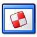

|

| Triggers
Automate workflows using the trigger system.
|
 Trigger
System Introduction
Trigger
System Introduction
KeePass features a powerful event-condition-action trigger system.
With this system, workflows can be automated. For example, you could define
a trigger that automatically uploads your database to a backup server after
saving the file locally.
A trigger starts to run when any of the specified events matches.
When this happens, the conditions are checked. If all conditions
are fulfilled, the actions of the trigger are performed.
Actions are performed consecutively; if one action fails, typically the execution
of the event is aborted (i.e. all following actions aren't performed).
A trigger must be both enabled and on in order to get executed.
The enabled state is set by the user; a disabled trigger has no
function. The on state is dependent on the state of the program. By
enabling the 'Initially On' option, a trigger is on by default.
If you enable the option 'Turn off after executing actions', the trigger
will be off after running once. There are actions to turn triggers on and off,
i.e. triggers can turn themselves and other triggers on and off, which allows
to define a complex state-dependent system of triggers.
Note that most strings in the trigger system are Spr-compiled, i.e.
placeholders,
environment variables, etc. can be used.
Events
- Application initialized:
This event occurs when KeePass has finished initializing, but didn't perform
any main window automations (like opening a default database) yet.
- Application started and ready:
This event occurs when KeePass has started up, performed main window
automations (like opening a default database) and is ready for user actions.
- Application exit:
This event occurs when KeePass is about to exit. Databases have been closed
already, but resources (like fonts, ...) are still valid.
- Opened database file:
This event occurs right after a database file has been opened successfully.
- File/URL: An optional event filter. If a filter is specified
(i.e. something is entered in 'File/URL - Filter'), the trigger
is only evaluated, if the filter matches the actual database file path.
For example, if you enter F:\ as filter string and specify
'Starts with' as comparison method, the trigger will only be evaluated,
if the database (that has just been opened) path starts with F:\.
- Saving database file:
This event occurs right before a database file is saved.
- Parameters: See 'Opened database file' event.
- Saved database file:
This event occurs right after a database file has been saved successfully.
- Parameters: See 'Opened database file' event.
- Closing database file (before saving):
This event occurs right before a database file is closed.
It occurs before KeePass saves the database automatically or asks the
user whether to save unsaved changes.
- Parameters: See 'Opened database file' event.
- Closing database file (after saving):
This event occurs right before a database file is closed.
The database file already was saved automatically or unsaved changes were
saved/discarded depending on the user's choice.
- Parameters: See 'Opened database file' event.
- Copied entry data to clipboard:
This event occurs when entry data (user name, password, ...) is copied
to the Windows clipboard.
- Value: An optional value (copied data) filter.
- User interface state updated:
This event occurs when KeePass has finished updating the state of the
user interface (menus, toolbar, ...). The user interface state is updated
after most user actions, like adding / editing / deleting entries and groups, etc.
- Custom toolbar button clicked:
This event occurs when the user clicks a custom toolbar button. Custom
toolbar buttons can be added using the 'Add custom toolbar button'
trigger action.
- ID: ID of the toolbar button that must have been clicked (see action).
Conditions
- Environment variable:
- Name: Name of the environment variable to check. The name must not
be enclosed in percent (
%) characters.
- Value: The value that the specified environment variable must have
for the condition to be true.
- String:
- String: A string (KeePass Spr-compiles this, i.e. you can e.g. use
placeholders).
- Value: The value that the specified, evaluated string must have
for the condition to be true.
- File exists:
- File: The file that must exist in order for the condition to be true.
- Remote host is reachable (ping):
- Host: Host to send the ping to.
- Database has unsaved changes:
Evaluates to true, if the specified database has unsaved changes.
- Database: The database to check for unsaved changes.
Actions
- Execute command line / URL:
The file/URL and arguments are parsed by the Spr engine before they
are sent to the shell, i.e. generic and database-dependent
placeholders can
be used.
If you want to use built-in shell commands, like COPY, please
see: Executing Built-In Shell Commands.
- File/URL: The string to be executed by the shell.
- Arguments: Optional. If 'File/URL' points to an executable
file, this string is sent to the executable as command line argument(s).
- Wait for exit: If this option is checked, KeePass waits indefinitely
for the started process to exit.
- Change trigger on/off state:
- Trigger name: Name of the target trigger whose on/off state
should be changed. If this field is left empty, the target trigger is
the current one.
- New state: Specifies the new state of the target trigger.
- Open database file:
Open a KDBX database file (in a new tab). If the given database file is opened
already, KeePass brings it to the foreground.
- File/URL: Path of the database file to open. If it is an URL,
the protocol (prefix) must be specified.
- IO Connection - User Name / Password: Optional credentials that are used
for connecting to the target file system (for example FTP account user name /
password). These credentials are not used to decrypt the database.
- Password / Key file / User account: Optional credentials that are used
to decrypt the database file.
- Save active database:
Save the currently active database. This action always saves the database,
even if there are no unsaved changes. To only save if there are unsaved changes,
use the 'Active database has unsaved changes' trigger condition.
- Synchronize active database with a file/URL:
Synchronize the currently opened and active database with a file.
- File/URL: Path of the database file to synchronize with.
If it is an URL, the protocol (prefix) must be specified.
- IO Connection - User Name / Password: Optional credentials that are used
for connecting to the target file system (for example FTP account user name /
password). These credentials are not used to decrypt the database.
- Import into active database:
Import a file into the currently opened and active database.
- File/URL: Path of the source file to import.
If it is an URL, the protocol (prefix) must be specified.
- File format: Specifies the import format (see the import
dialog for possible values).
- Method: Specifies the behavior for groups/entries that exist
in both the currently active database and the import file.
- Password / Key file / User account: Optional credentials that are used
to decrypt the import file, if required.
If no credentials are specified, but the import file is encrypted, KeePass
shows a key prompt dialog.
- Export active database:
Export the currently opened and active database to a file.
- File/URL: Path of the target file to export to.
If it is an URL, the protocol (prefix) must be specified.
- File format: Specifies the export format (see the export
dialog for possible values).
- Filter - Group: Specifies the path of the group to export
(optional; an empty string means the whole database).
The path must start with the character used as separator, and the
name of the root group of the database must not be specified.
For example, to export a group 'B' that is a subgroup of the group
'A', specify
/A/B as group path.
- Filter - Tag: Export only the entries that have the
specified tag (optional parameter).
- Close active database:
Close the currently active database.
- Activate database (select tab):
- File/URL: Path of the database to activate. This may be a
substring of the actual database path. For example, specifying
MyDatabase would match a database
C:\Documents\KeePass\MyDatabase.kdbx.
- Filter: Specifies the databases that are being
considered. If 'Triggering' is selected and the 'File/URL' field is empty,
the database that triggered the event is activated.
- Wait:
Wait for the specified amount of time.
- Time span: Number of milliseconds to wait.
- Show message box:
Displays a message box.
- Main instruction: First line of the message text
(which is possibly displayed using a stronger font).
- Text: Message text.
- Icon: The icon that is displayed next to the message text.
- Buttons: Specifies the available buttons.
- Default button: The button that initially has the focus.
- Action - Condition: Specifies the condition that must be fulfilled
for the following action to be performed. For example, if 'Button OK/Yes' is
selected, the action is only performed if the user clicks the 'OK' or
'Yes' button of the message box.
- Action: The action to perform after showing the message box.
- Action - Parameters: Parameters for the specified action. For
example, if executing a command line / URL is specified as action, this field
must contain the command line / URL.
- Perform global auto-type:
Execute global auto-type (like pressing the global auto-type hot key).
- Perform auto-type with selected entry:
Executes auto-type with the currently selected entry as context.
- Sequence: The keystroke sequence to send. If this field is empty,
the default sequence is used.
- Show entries by tag:
Search all entries having the specified tag and show them in the
entry list of the main window.
- Tag: Tag that the entries must have.
- Add custom toolbar button:
Add a custom button to the toolbar in the main window.
- ID: ID of the toolbar button (see the event handler).
- Name: Text that is shown on the toolbar button.
- Description: Text that is shown in the tooltip of the button.
- Remove custom toolbar button:
Remove a custom button from the toolbar in the main window.
- ID: ID of the toolbar button (see the event handler).
Examples
See the Trigger Examples page.